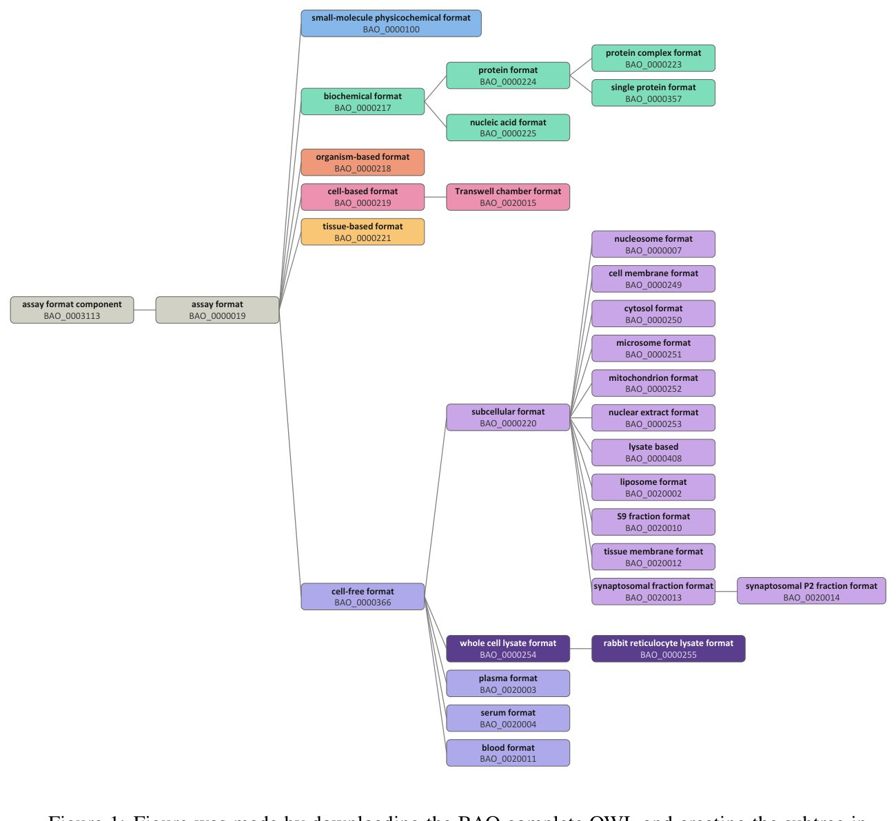
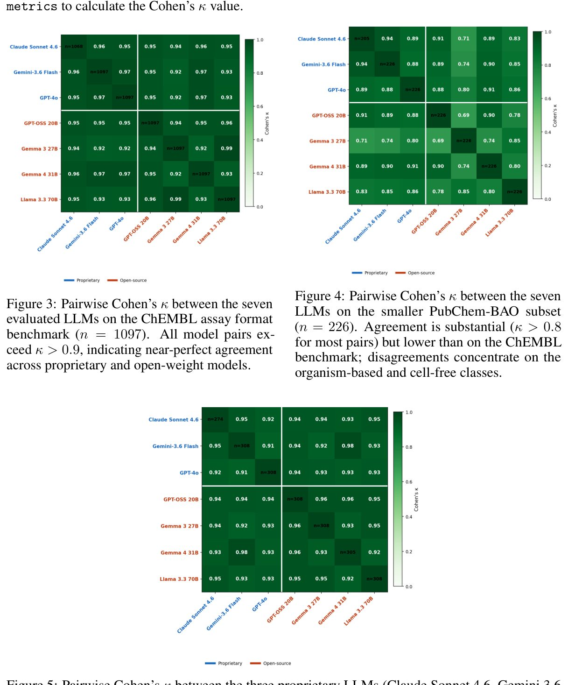
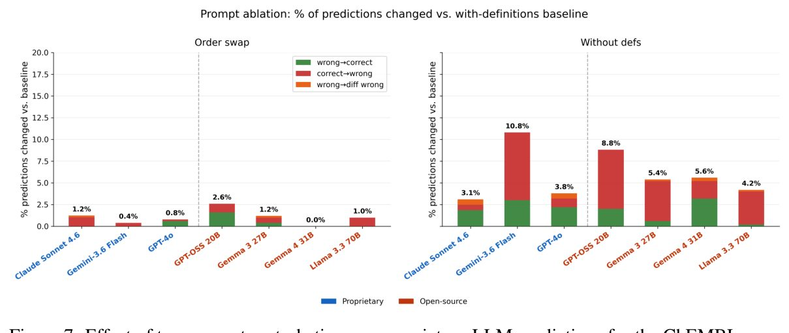

Смогут ли нейросети навести порядок в хаосе биологических данных


Биологические базы данных, такие как PubChem, содержат миллионы записей об экспериментах, но многие из них лишены структурированных метаданных. Отсутствие стандартизированных описаний мешает ученым сравнивать результаты разных исследований и эффективно использовать их для обучения нейросетей. Авторы работы протестировали семь языковых моделей, чтобы выяснить, могут ли они автоматически классифицировать протоколы экспериментов согласно онтологии BAO.
Главное
- Более 99,9% записей в PubChem не имеют стандартизированных метаданных BAO.
- Языковые модели показывают точность выше 0,96 в классификации форматов анализов.
- LLM способны эффективно выявлять ошибки в существующих экспертных аннотациях.
Подробнее
Исследователи проанализировали около 2 миллионов биоанализов в PubChem и обнаружили критическую нехватку данных: 36% записей не имеют указания формата анализа, а 89% — типа биоанализа. Для решения этой проблемы они использовали семь различных языковых моделей (LLM), включая как открытые, так и проприетарные решения, для автоматического присвоения меток из BioAssay Ontology (BAO). В качестве эталона для проверки точности (silver labels) использовались данные из базы ChEMBL.
Результаты показали, что модели достигают высокой точности (recall от 0,96) при определении формата анализа и метода детекции. В ходе качественного анализа эксперт-куратор подтвердил, что нейросети способны находить ошибки в уже существующих аннотациях, иногда предлагая более точные классификации, чем исходные данные. Разница в производительности между открытыми и закрытыми моделями оказалась незначительной, что делает автоматизацию доступной для широкого круга научных задач.
Ограничения
Работа является препринтом, а точность моделей снижается на редких типах анализов, требующих обязательной проверки человеком.
Подробный разбор статьи
Резюме
Развитие базовых моделей для прогнозирования свойств молекул требует высокого уровня готовности данных, включая точную аннотацию метаданных. В настоящее время как открытые репозитории, так и промышленные базы данных скрининга сталкиваются с отсутствием, противоречивостью или смешением аннотаций биологических анализов. В данной работе авторы оценили масштаб проблемы отсутствующих аннотаций в базе PubChem для полей формата анализа (assay format) и метода физического детектирования (physical detection method) согласно онтологии BioAssay Ontology (BAO).
Пояснение
Онтология BioAssay Ontology (BAO) — это структурированная система классификации, которая позволяет стандартизировать описание биологических экспериментов, чтобы компьютеры могли «понимать» тип и условия проведения анализа.
Анализ показал критическую нехватку данных в PubChem, содержащем около 2 миллионов биоанализов: у 36% отсутствует информация о формате анализа, у 89% — о типе биоанализа, а более чем у 99,9% записей отсутствуют термины, соответствующие BAO для формата или технологии детектирования. Это подтверждает необходимость автоматизации процесса курирования метаданных.
Для решения этой задачи исследователи изучили способность семи различных языковых моделей (LLM), включая как открытые, так и проприетарные решения, предсказывать и проверять аннотации на основе текстовых описаний анализов. Оценка проводилась на наборах данных, сформированных из PubChem и ChEMBL, путем сравнения предсказаний моделей с существующими «серебряными» метками (автоматически присвоенными ранее аннотациями).
Важно
Модели показали высокую точность (recall не менее 0,96) при определении форматов биохимических и клеточных анализов, демонстрируя сопоставимую эффективность для технологий детектирования.
Хотя расхождения между моделями и исходными данными увеличивались для редких классов, ручная проверка показала, что многие из этих случаев связаны с противоречиями в самих исходных источниках, а не с ошибками моделей. В качественном исследовании с участием эксперта-куратора из индустрии было установлено, что аргументация LLM помогла специалисту пересмотреть собственные метки, что подтверждает потенциал моделей в выявлении некорректно размеченных данных. Разница в производительности между проприетарными и открытыми моделями оказалась незначительной. Несмотря на многообещающие результаты, авторы подчеркивают необходимость оценки надежности для каждого класса и обязательного участия человека перед использованием таких меток в конвейерах машинного обучения.
Осторожно
Исследование основано на сопоставлении с существующими базами данных; автоматизированные аннотации требуют экспертного контроля, так как модели могут наследовать ошибки из обучающих выборок.
Введение
Принципы FAIR и проблема метаданных в биоаналитических данных
Принципы FAIR (находимость, доступность, интероперабельность, повторное использование) призваны упорядочить научные данные, однако их готовность к использованию в моделях искусственного интеллекта остается низкой. Основная проблема заключается в неполных, противоречивых или некорректных метаданных в репозиториях. Базы биоаналитических данных (bioassay) критически важны для машинного обучения в поиске лекарств, так как они описывают реакцию биологических систем на вещества. В крупнейшей базе PubChem содержится более 100 миллионов соединений и результаты свыше 1 миллиона анализов, но многие записи лишены структурированных метаданных о формате эксперимента или методе детекции. Это связано как с устареванием данных, так и с отсутствием единой терминологии.
Важно
Существующие базы данных, такие как PubChem, содержат миллионы записей с неструктурированными метаданными, что препятствует их эффективному использованию в машинном обучении.
Для решения проблемы неоднозначности была разработана онтология биоанализов (BioAssay Ontology, BAO). Она разделяет описание анализа на ортогональные оси: биологический формат, физический метод детекции, измеряемый показатель и мишень. Это позволяет различать анализы, которые имеют схожий формат, но используют разные методы детекции. Однако текущие метки в PubChem, такие как «In vivo/Toxicity» или «Cell-based/RNAi», объединяют формат, модальность и конечную точку в одну строку, что невозможно исправить вручную для миллионов записей. Авторы предлагают использовать большие языковые модели (LLM) для автоматизации этого процесса. В работе оцениваются 4 открытые и 3 закрытые модели на предмет классификации форматов и методов детекции согласно BAO, с использованием перекрестных ссылок ChEMBL и экспертной проверки.
Онтология биологических анализов (BioAssay Ontology, BAO)
Онтология BAO была создана для перевода результатов высокопроизводительного скрининга из формата свободного текста в логически строгие описания. Модель BAO фокусируется на декомпозиции анализов по категориям: биологический компонент, мишень, конечная точка, формат и метод. Несмотря на постоянные обновления — текущая версия v2.8.19 от 6 мая 2026 года включает 7918 классов — охват всех существующих анализов остается сложной задачей. Например, в 2014 году BAO не могла адекватно описать все анализы транспортеров в ChEMBL.
Пояснение
Онтология — это формализованная система знаний, которая определяет понятия и связи между ними, позволяя компьютерам «понимать» структуру данных.
Ранее применение BAO требовало ручной разметки. Исследование Vempati et al. показало, что можно сопоставить 944 анализа PubChem с 20 терминами BAO, что снижает терминологическую неоднозначность. Промышленность также использует этот подход: компания AstraZeneca применила BAO для аннотирования 381 внутреннего анализа (2005–2013 гг.) и 233 анализов из PubChem, чтобы выявить технологические разрывы и артефакты. Тем не менее, ручной труд не позволяет масштабировать этот подход на миллионы доступных биоанализов.
Аннотированные публичные репозитории данных
В данной работе мы используем три источника аннотаций биологических анализов: PubChem, ChEMBL и BARD. PubChem представляет собой крупнейшую коллекцию данных высокопроизводительного скрининга и медицинской химии, накопленную с 2004 года. По состоянию на момент выгрузки, база содержит около 1,9 млн биологических анализов (AID). Однако качество метаданных в них неоднородно: часто они представлены в виде неструктурированного текста. Для решения этой проблемы проект BARD создал набор курируемых аннотаций BAO (BioAssay Ontology) для записей PubChem, полученных в рамках программы NIH Molecular Libraries Program. Эксперты вручную сопоставили текстовые протоколы с терминами BAO. Хотя портал BARD закрыт, 4477 аннотаций для 1000 анализов остаются доступными в PubChem. Из них 997 имеют аннотированный метод детекции, а 998 — формат анализа.
Важно
BARD предоставляет наиболее точные, экспертно проверенные аннотации, тогда как PubChem и ChEMBL содержат более обширные, но менее структурированные или неполные данные.
ChEMBL — это база данных биоактивности, курируемая вручную на основе научной литературы и добровольных взносов, включающая около 2,0 млн анализов. Несмотря на стандартизацию, около 10% записей не имеют указанного формата, а метки методов детекции часто отсутствуют или сгенерированы ненадежными алгоритмами. Мы ранжируем источники по надежности: BARD — как эталон, ChEMBL — как вторичный источник, и нативные метаданные PubChem — как наименее надежные. Существующие подходы, такие как LIT-PCBA, MF-PCBA или CAPRICHO, пытаются очищать данные или помечать ошибки, однако они ограничены использованием ключевых слов и существующих полей, что подчеркивает необходимость автоматизации через LLM.
Курирование биологических анализов с помощью языковых моделей
LLM демонстрируют высокую эффективность в извлечении метаданных из биомедицинских записей. Например, модели на базе LLaMA успешно извлекают параметры ChIP-seq или данные о клеточных линиях и генных возмущениях, превосходя традиционные методы сопоставления. В области аннотирования форматов анализов применяются методы распознавания именованных сущностей (NER) и связывания с онтологиями (text2term).
Пояснение
LLM (Large Language Models) — нейросети, способные понимать и генерировать текст, которые в данном контексте используются для структурирования неформализованных описаний экспериментов.
Осторожно
Использование LLM сопряжено с риском генерации нестандартных меток, поэтому современные методы включают этапы привязки вывода модели к формальным онтологиям.
Существующие подходы, такие как RELATE, используют фреймворки «поиск-затем-промпт» для привязки ответов LLM к терминам онтологий, что минимизирует риск появления невалидных меток. На текущий момент вопрос о том, могут ли подобные стратегии надежно и единообразно назначать метки BAO (формат, детекция, мишень) на основе свободного текста, остается неизученным, и наша работа направлена на заполнение этого пробела.
Результаты
Рабочий процесс аудита на основе больших языковых моделей
Учитывая пропуски, неоднородность и противоречия в метаданных, выявленные ранее, мы оценили возможность использования больших языковых моделей (LLM) для масштабируемого присвоения меток биоанализов. Прогнозы моделей сравнивались с существующими аннотациями из баз PubChem, ChEMBL и BARD, которые мы называем «серебряными» метками. Поскольку эти эталонные данные сами могут содержать ошибки или быть неполными, представленные метрики классификации не следует считать окончательным показателем точности. Для контроля мы провели ручную проверку подвыборки данных.
Пояснение
Коэффициент каппа Коэна (Cohen’s κ) — статистический показатель, оценивающий степень согласия между двумя оценщиками, где 1 означает полное совпадение, а 0 — случайное соответствие.
Надежность в сравнении с «серебряными» источниками
Мы оценили согласованность ответов LLM с помощью коэффициента каппа Коэна. В наборе данных ChEMBL все семь моделей показали высокую согласованность (κ > 0,9), аналогичные результаты получены для задач классификации BAO. На меньшей выборке PubChem-BAO согласованность снизилась, но осталась высокой (κ > 0,8), за исключением модели Gemma 3 27B, показавшей более низкие результаты. При использовании метода голосования большинства LLM совпадали с метками ChEMBL в 96% случаев. Форматы «клеточный» и «биохимический» классифицировались стабильно хорошо (полнота/recall ≥ 96%). Для «организменного» формата показатели варьировались: модель Gemma 3 27B достигла максимальной точности (precision), но сделала меньше всего прогнозов. В целом для этого класса полнота составила 87%, а точность — 77%.
Важно
Модели LLM показали высокую согласованность (κ > 0,8–0,9) и точность до 96% для большинства форматов, однако их эффективность снижается на редких классах данных.
Для форматов «бесклеточный» и «тканевый» точность и полнота оказались значительно ниже, с максимум одним верным прогнозом. Однако ручная проверка показала, что в 7 из 8 таких случаев метки BARD отличались от ChEMBL, и LLM совпадали с BARD, либо эксперт подтверждал правоту модели. Мы проанализировали 43 случая расхождения LLM с ChEMBL (Таблица 2). В 17 случаях (59%) консенсус LLM совпадал с метками BARD, которые проходят более строгую верификацию, чем ChEMBL. В ситуациях, где ChEMBL и BARD совпадали, а модели — нет, разногласия среди самих LLM были неполными, что указывает на потенциал использования «структурированных дебатов» между моделями для уточнения ответов.
Таблица 2. Категоризация 43 анализов ChEMBL, где большинство LLM не согласились с форматом ChEMBL BAO
| Паттерн расхождения | Количество | % | Отправлено на проверку |
|---|---|---|---|
| LLMs support the BARD label against ChEMBL | 623968 | spectrophotometry / fluorescence method / quantitative reverse transcription PCR (this is not a physical detection method but an assay supporting method) | – 3/3 (6 att.) |
| ChEMBL and BARD agree and LLMs disagree with both | 588778 | fluorescence / spectrophotometry / (no other) | – 5/2 |
| ChEMBL and BARD disagree and LLMs disagree with both (novel prediction) | 602418 | luminescence / fluorescence / (no other) | – 3/0 |
| No BARD label available; ChEMBL-only ground truth | 588816 | fluorescence / simple measurement method / (no other) | – 3/1 (6 att.) |
| 602170 | spectrophotometry / visual observation method / (no other) | – 3/1 | |
| 624103 | fluorescence / simple measurement method / (no other) | – 3/2 (6 att.) |
Указано количество и процент паттернов расхождения, отправленных на проверку старшим промышленным куратором (Таблица 13).
Осторожно
Использование «серебряных» меток в качестве эталона ограничено их потенциальной неточностью; корреляция между предсказаниями LLM и базами данных не доказывает безошибочность моделей.
Экспертная оценка аннотаций
Мы провели дополнительный ручной анализ для 17 анализов (AID), где мнения экспертов и консенсус больших языковых моделей (LLM) различались. В выборку вошли случаи, когда метки ChEMBL и PubChem BARD совпадали, а LLM — нет; четыре случая, где LLM согласились с BARD, но разошлись с ChEMBL; а также ситуации, где LLM не совпали ни с одним из источников. Экспертам предоставлялись те же данные, что и моделям: название, описание, комментарии и протокол.
Пояснение
BAO (BioAssay Ontology) — это стандартизированная система классификации биологических анализов, которая помогает упорядочить данные о методах исследования лекарственных соединений.
Эксперты отметили сложность задачи. В 6 случаях они сразу согласились с большинством LLM, еще в 6 — после ознакомления с аргументацией моделей. В 4 случаях эксперты сочли выводы LLM правдоподобными (в 3 из них — после изучения доказательств), но не смогли присвоить однозначную метку. Это указывает на то, что некоторые анализы могут относиться к нескольким категориям или содержать недостаточно данных для классификации.
Важно
В ряде случаев LLM помогли экспертам исправить первоначальные ошибки, вызванные невнимательностью к определениям BAO, однако модели также допускали ошибки, путая клеточные линии с целыми организмами.
Например, для AID 2695 эксперт сначала классифицировал анализ как «клеточный», но после анализа доводов LLM согласился, что это «организменный» формат, так как согласно BAO, одноклеточные организмы относятся к категории организмов. В случае AID 588769 модели выявили вероятную ошибку в разметке PubChem. Однако для AID 504631 эксперт предпочел метку ChEMBL, так как LLM ошибочно классифицировали живой организм как клеточную линию, несмотря на верное извлечение доказательств. Сравнение с данными PubChem (Таблица 3) подтвердило, что LLM чаще соглашаются с BARD, чем с независимыми аннотациями PubChem, что указывает на отсутствие единого стандарта «истинной» разметки в базах данных.
Обсуждение и выводы
Наш аудит показал, что массовая выгрузка данных из PubChem содержит неполные метаданные: примерно 36% записей не имеют указания формата анализа, и менее 0,1% содержат структурированную аннотацию BAO. Мы также выявили расхождения между ресурсами: в 10% из 236 анализов, для которых были доступны метки формата как в BARD, так и в ChEMBL, данные не совпадали. Эти пробелы обусловлены тем, что многие поля метаданных при депонировании являются необязательными, а также ограниченным словарем поля «Assay Format» в PubChem по сравнению с иерархией BAO.
Для решения этой проблемы мы протестировали семь LLM (как проприетарных, так и с открытым исходным кодом). Модели показали высокую степень согласованности, восстанавливая хорошо обоснованные классы форматов анализа с полнотой (recall) выше 0,96. Ручная проверка случаев, где ответы LLM расходились с «серебряными» метками, показала, что ошибки часто связаны с противоречиями между источниками или неверной маркировкой, а не с самими моделями. Более чем в трети случаев, где большинство LLM не соглашались с ChEMBL, они фактически совпадали с меткой PubChem/BARD, а наш старший куратор в ряде случаев пересматривал свои решения после ознакомления с доказательствами, приведенными моделями.
Важно
LLM демонстрируют высокую точность (recall > 0,96) в классификации форматов анализов и могут эффективно выявлять противоречия в существующих базах данных, работая значительно дешевле ручной курации.
Различия между проприетарными и открытыми моделями были незначительными, что делает последние жизнеспособным вариантом для масштабной аннотации. Стоимость аудита 1000 записей составляет $3–9, что на порядки дешевле ручной перепроверки. Мы предполагаем, что LLM могут стать важным звеном в конвейере аннотирования: они способны помечать противоречивые записи, извлекать текстовые доказательства и направлять неоднозначные случаи экспертам. При этом наши результаты имеют ограничения: «серебряные» метки лишь частично надежны, поэтому полнота, рассчитанная по ним, отражает согласие с существующей курацией, а не абсолютную истину. Кроме того, оценка проводилась на первом уровне глубины BAO, а ограничения API PUG JSON лимитировали объем выборки.
Пояснение
«Серебряные» метки — это данные, полученные автоматизированным способом или из существующих баз, которые считаются достаточно качественными для обучения, но не являются эталонными (золотым стандартом).
Качественная валидация также ограничена тем, что проводилась одним экспертом. Мы выявили специфический тип ошибки: для AID 504631 модели приводили верные доказательства (что Plasmodium falciparum — одноклеточный организм), но ошибочно классифицировали анализ как клеточный, а не организменный. Это подчеркивает необходимость выборочной проверки человеком. Процесс также выявил пробелы в самой онтологии BAO: отсутствие определения для «биосенсора» и неоднозначность методов «простого измерения» и «визуального наблюдения». В дальнейшем мы планируем экспериментировать с большей глубиной гранулярности BAO и использовать LLM для разрешения конфликтов в «серебряных» метках.
Таблица 1. Отзывчивость/точность по классам для базовой модели ChEMBL (формат анализа)
| Модель | Acc. | mF1 | mF1top3 | на основе организмов (n=784) | на основе тканей (n=252) | бесклеточные (n=53) | (n=6) | (n=2) |
|---|---|---|---|---|---|---|---|---|
| Claude Sonnet | 4.6 | 0.963 | 0.560 | 0.934 | 0.98 / 0.99 | 0.96 / 0.98 | 0.88 / 0.83 | 0.00 / – 0.00 / 0.00 |
| Gemini 3.6 Flash | 0.957 | 0.578 | 0.919 | 0.97 / 0.99 | 0.96 / 0.97 | 0.94 / 0.71 | 0.00 / – | 0.50 / 0.08 |
| GPT-4o | 0.954 | 0.551 | 0.919 | 0.96 / 0.99 | 0.96 / 0.97 | 0.91 / 0.74 | 0.00 / – | 0.00 / 0.00 |
| GPT-OSS 20B | 0.956 | 0.602 | 0.908 | 0.97 / 0.98 | 0.96 / 0.97 | 0.77 / 0.79 | 0.17 / 1.00 | 0.00 / 0.00 |
| Gemma 3 27B | 0.979 | 0.576 | 0.960 | 0.99 / 0.98 | 0.99 / 0.97 | 0.85 / 0.98 | 0.00 / – | 0.00 / 0.00 |
| Gemma 4 31B | 0.951 | 0.545 | 0.909 | 0.96 / 0.99 | 0.96 / 0.97 | 0.91 / 0.70 | 0.00 / – | 0.00 / 0.00 |
| Llama 3.3 70B | 0.976 | 0.572 | 0.954 | 0.99 / 0.98 | 0.99 / 0.98 | 0.85 / 0.94 | 0.00 / – | 0.00 / 0.00 |
| Majority vote | 0.961 | 0.553 | 0.921 | 0.97 / 0.98 | 0.97 / 0.97 | 0.87 / 0.77 | 0.00 / – | 0.00 / 0.00 |
Значения указаны как R/P; поддержка (ntrue) указана один раз для каждого столбца в заголовке. Два класса с наименьшей поддержкой (на основе тканей и бесклеточные, n<10) слишком малы для надежных агрегированных метрик. Некорректные предсказания исключены из этих метрик. Точность указана как «–», если предсказаний не было.
Таблица 12. Ручная проверка 43 анализов, где большинство LLM не согласились с форматом ChEMBL BAO
| ID | ChEMBL | BARD (если отл.) | Комментарий | ndis | nal |
|---|---|---|---|---|---|
| 2096 | cell-based | cell-based | organism-based | ChEMBL and BARD agree; LLMs disagree | 4 3 |
| 2695 | cell-based | cell-based | organism-based | ChEMBL and BARD agree; LLMs disagree | 4 3 |
| 492959 | cell-based | cell-based | organism-based | ChEMBL and BARD agree; LLMs disagree | 4 3 |
| 651893 | cell-based | cell-based | organism-based | ChEMBL and BARD agree; LLMs disagree | 4 3 |
| 504494 | biochemical | cell-based | cell-free | LLMs disagree with both ChEMBL and BARD | 5 2 |
| 463208 | biochemical | cell-based | cell-free (6 att.) | LLMs disagree with both ChEMBL and BARD | 4 2 |
Все метки — форматы анализа BAO; суффикс «format» опущен для экономии места. ndis — количество моделей, не согласных с ChEMBL, nal — количество моделей, согласных с ChEMBL; если не указано иное, для каждой строки использовалось семь моделей. Строки, выделенные серым, были отправлены на проверку старшим промышленным куратором (Таблица 13).
Таблица 15. Ручная проверка 34 анализов физических методов детекции, где большинство моделей не согласились с меткой BAO из стороннего источника в выгрузке PubChem
| AID | Метка BAO (сторонняя) | Прогноз большинства | Аннотация биоанализа (PubChem) | Комментарий | nmaj./nal. |
|---|---|---|---|---|---|
| 624135 | fluorescence | simple measurement method | (no other) | – | 3/2 (6 att.) |
| 624334 | fluorescence | visual observation method | (no other) | – | 2/0 (6 att.) |
Все метки относятся к физическим методам детекции BAO; суффикс «method» опущен для экономии места. nmaj. — количество моделей, поддерживающих прогноз большинства; nal. — количество прогнозов, совпавших со сторонней меткой BAO. Если не указано иное, для каждой строки использовалось 7 моделей. Строки, выделенные серым, были дополнительно проверены старшим промышленным куратором.
Методы
Создание набора данных
Для оценки способности LLM классифицировать метаданные биологических анализов был сформирован датасет на основе данных PubChem BioAssay. Из 1 994 310 загруженных записей (AID) было отобрано 1 770 568, содержащих описание или комментарии. Для восполнения пропущенных полей использовался API PUG REST. Дополнительно данные были сопоставлены с базой ChEMBL 37. В итоговую выборку вошли 1097 анализов с аннотациями формата из ChEMBL, 226 анализов с аннотациями только из PubChem и 308 анализов с данными о методах физической детекции. Все метки классифицировались согласно иерархии BAO (Рис. SN 1, 2). Поскольку исходные аннотации содержат противоречия, они классифицируются как «серебряные метки» (silver labels) и используются для проверки согласованности с ответами моделей.
Пояснение
«Серебряные метки» — это данные, полученные из существующих баз, которые могут содержать ошибки или устаревшие классификации, в отличие от «золотого стандарта» (выверенных экспертами данных).
Определение задачи и используемые LLM
Модели должны предсказать формат или метод детекции на основе заголовка, описания и протокола. Использовались проприетарные модели (GPT-4o, Gemini 3.6 Flash, Claude Sonnet 4.6) через API и локальные модели с открытыми весами (Gemma 4 31B, GPT-OSS 20B, Qwen 3.5, Llama 3.3 70B) через Ollama v0.17.4. Для оценки влияния промптов была отобрана стратифицированная выборка из 500 анализов. В локальных моделях применялся параметр JSON-Schema для жесткого ограничения словаря меток.
Пропуски и несоответствия в метаданных PubChem BioAssay
Анализ показал, что из 1 994 310 записей лишь 89% содержат название, описание и комментарий, при этом менее 10% описаний уникальны. Исследование четырех категорий метаданных (формат, формат BAO, технология детекции BAO, тип BioAssay) выявило высокую гетерогенность. Поле «Тип BioAssay» оказалось непригодным для классификации из-за смешения понятий формата, методологии и конечных точек (Таблица SN 9). Ограниченность словаря PubChem (всего три категории: клеточный, организменный, биохимический) приводит к расхождениям при сопоставлении с иерархией BAO. Выявлены внутренние противоречия: например, AID 1885 в веб-интерфейсе указан как «клеточный», а в пакетной выгрузке — как «клеточный/организменный». В 10,2% случаев (24 из 236) наблюдались конфликты между метками BARD и ChEMBL. Кроме того, 36% записей не содержат данных о формате, а менее 0,1% имеют аннотации BAO в комментариях.






Полное описание рисунка
Рисунок 7: Влияние двух типов возмущений промпта на предсказания проприетарных LLM для подмножества форматов анализов ChEMBL. Удаление определений BAO (Without defs) меняет значительно больше предсказаний, чем изменение порядка классов (Order swap), причем диспропорционально сильно для Gemini 3.6 Flash (10,8%). Сегменты столбцов показывают, изменилось ли предсказание с другой метки на «серебряную» (зеленый цвет), с «серебряной» метки на другую (красный цвет) или между двумя метками, отличными от «серебряной» (оранжевый цвет); проценты над каждым столбцом указывают общую долю измененных предсказаний.
Схема исследования
Препринт не прошёл рецензирование. Выводы предварительные.
Источник
| Источник | Категория | Лицензия препринта |
|---|---|---|
| arXiv | other | arxiv |
Источники
| Источник | Ссылка |
|---|---|
| Страница препринта | arxiv.org |
| Полный текст (PDF) | arxiv.org |
| DOI | doi.org |
| Метаданные Crossref | api.crossref.org |
| Europe PMC | europepmc.org |
| Иллюстрация | commons.wikimedia.org |